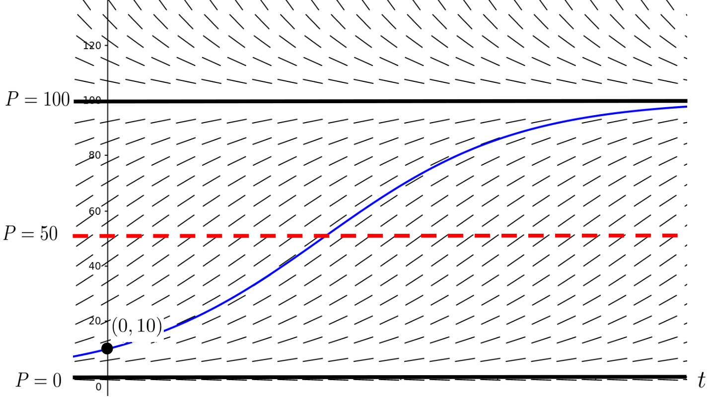
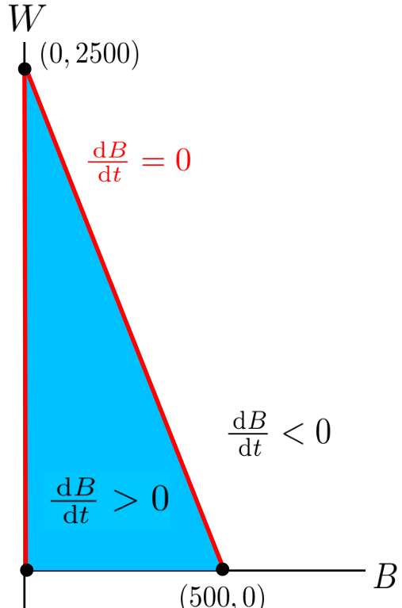
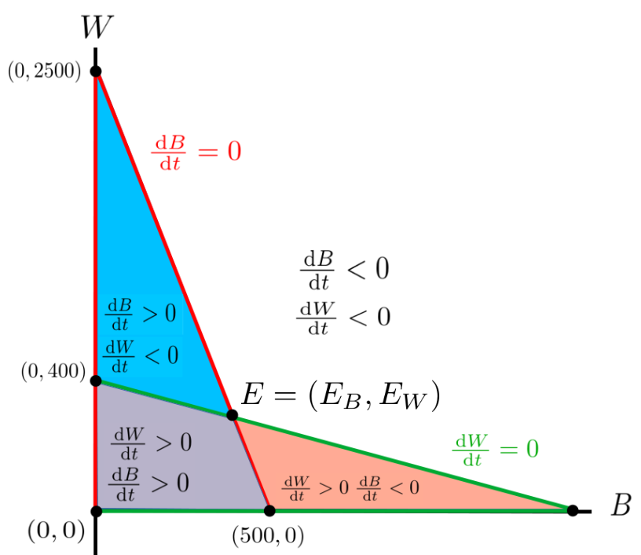

In the introduction to Chapter9 we mentioned that the original motivation for the invention of Calculus was optimization. But after it was invented scientists and mathematicians found that Calculus is useful for solving a wide variety of other kinds of problems. In this chapter we will explore how Calculus helps us solve various non-optimization problems. As you will see the ability to sketch the graph of a function, even if it is only qualitative, is extremely useful.
Subsection11.1.1Modeling a Trout Farm
A man may fish with the worm that hath eat of a king, and eat of the fish that hath fed of that worm.
Suppose we are running an industrial trout fishery. There are a number of questions wed really like to be able to answer at any given time. How large is the current stock? Do we have too few? Too many? Is our stock of trout in danger of dying off due to under or over population? How frequently can we harvest our stock without endangering it? Even if precise numbers arent possible, it would still be useful to have a good, qualitative understanding of the life cycle of our stock of trout so we could make reliable estimates.
To gain such an understanding we will build a model of our trout population as a function of time. As a first approximation assume that we have complete control of the lake where we will hold the trout. We can supply all of the food and space that our trout need to continue reproducing.
Suppose that our lake is stocked with an initial purchase of \(10\) tons of trout. Let \(P(t)\) represent the amount of fish we have, in tons, at time, \(t\text{,}\) in years, (so \(P(0)=10\) tons). We can estimate the rate of growth of our population by casting a net into the same point of the lake each year and weighing the catch. Comparing the weight of the catch from year to year will give a reasonable estimate of the rate at which the trout population grows in one year.
For the sake of specificity, suppose that the population is growing continuously at a nominal growth rate of \(10\)%. Then we have
This IVP should look familiar. When we were modeling the growth of a bacteria colony in Example8.31 we got IVP(8.19), which is almost the same equation, remember? The only difference between them is that in IVP(11.1) the coefficient of \(P\) is \(0.1\) and in IVP(8.19) the coefficient of \(P\) is \(0.3\text{.}\)
Since the solution of equation(8.19) was \(P(t)=10e^{0.3t}\) it seems reasonable to conclude that the solution of equation(11.1) is:
Confirm that \(P(t)=10e^{0.1t}\) solves IVP(11.1).
The graph of \(P(t)\) is shown below. As you can see our trout population is growing exponentially, so it appears that were going to get very rich as soon as we sell of all of those fish.
Of course, in practice this is not what happens. We made several simplifying assumptions when we began. We assumed that (1) we could supply all of the food our growing population needs, and (2) our trout would have all of the room they needed.
These assumptions are unrealistic in the long run. But in the short run they are not completely crazy.
Recall that in Chapter8 we described a situation in Lake Erie near Toledo, Ohio when, for a few days, the algae population grew exponentially in much the same manner as that suggested by our trout model. Naturally such growth cannot be sustained. Eventually the algae will consume all of the available nutrients, or will simply run out of space. They will then begin to die off. But our model, simple as it is, gives pretty accurate predictions of the population for small values of \(t\text{,}\) be they a population of bacteria, algae, trout, or even humans.
In building a mathematical model of any physical phenomenon we start with the simplest model we can, find out where it goes bad, and then tweak it so that we:
keep those properties of the model that make realistic predictions, and
eliminate those properties of the model that make unrealistic predictions.
Thus we need to tweak IVP(11.1) in such a way that \(\dfdx{P}{t}=0.1P\) when \(P\) is near zero (or, at least, \(\dfdx{P}{t}\approx0.1P\)), but which also recognizes that exponential growth is unsustainable.
Since exponential growth cant be maintained indefinitely the population must eventually stop growing and drop to a lower level or collapse entirely. Thus there must be a maximum population level, \(P(t)\text{,}\) where \(\dfdx{P}{t}=0\text{.}\) Whatever that level is, well call it \(C\text{.}\)
One way to tweak IVP(11.1) to reflect this fact is to insert the factor \((C-P)\) as follows
We see that if the trout population ever reaches \(C\) it must level off since in that case \(\dfdx{P}{t}=0\text{.}\) Therefore this model avoids predicting that the trout population will grow exponentially.
However, notice that for values of \(P\) near zero, \(C-P\approx
C\text{.}\) Thus equation(11.2) says that when \(P\) is near zero
but we needed \(\dfdx{P}{t}\approx0.1P\) so this particular tweak wont quite work because the difference between \(\dfdx{P}{t}\approx0.01P\) and \(\dfdx{P}{t}\approx\left(0.01C\right)P\) could be substantial, depending on the value of \(C\) (which we dont know).
So we will try a slightly different tweak. Instead of \((C-P)\) we will insert the factor \(\left(1-\frac{P}{C}\right)\) as in IVP(11.3) below.
Notice that we still have \(\dfdx{P}{t}=0\) when \(P=C\text{.}\) But now we also have \(\dfdx{P}{t}\approx0.1P\) when \(P\) is close to zero, so this change seems to meet the goal of our tweak. This type of IVP(11.3) is called the Logistic Equation (or the Logistic Model) and its solution is a better long-term predictor of population growth than is the solution of equation(11.1) as we will see.
The parameter \(C\) would normally be determined experimentally (measured), but for purposes of this discussion we will arbitrarily assign it the value \(C=100\) just to keep the numbers easy to deal with. So, our IVP will be
Compute the growth rate of the trout population for \(P\) equal to
\(\displaystyle 99\)
\(\displaystyle 99.9\)
\(\displaystyle 99.99\)
\(\displaystyle 100.01\)
\(\displaystyle 100.1\)
\(\displaystyle 101\)
It would be nice if we could find a formula for \(P(t)\) in terms of \(t\) but this will have to wait for a course in Integral Calculus. Still we would like to provide a reasonable sketch of the graph of \(P = P(t)\text{.}\) Aside from the initial condition, \(P(0) = 10\text{,}\) we dont know any specific values of \(P(t)\) but we can at least capture the qualitative behavior of the population.
We will obtain a sketch of the graph of \(P(t)\) in the same systematic way as before. We can use the first derivative test to determine when the trout population is increasing or decreasing. But keep in mind that we have \(\dfdx{P}{t}\) in terms of \(P\) not \(t\) so we wont be able to say that the population is increasing or decreasing at a particular time. This will change how we interpret the results. For example we can say that when we have \(25\) tons of trout the population is increasing even though we do not know when this happens.
It should be straightforward to see that the POTPs are \(P = 0,
100\text{.}\) Since the context of our problem prohibits \(P \lt 0\) (why?), we will look at intervals \([0,100)\) and \((100, \infty)\) to determine for which values of \(P\) the population is increasing or decreasing. We summarize this analysis in the following table:
Interval
\((0,100)\)
\((100,\infty \)
\(\dfdx{P}{t} \)
\(\dfdx{P}{t}\gt 0\)
\(\dfdx{P}{t}\lt 0\)
\(P \)
\(\nearrow\)
\(\searrow\)
Drill11.3.
Suppose we were to use the data in the table above to plot a graph of \(P\) versus \(t\text{.}\) Would there be a maximum when \(P=100\text{.}\) Explain why or why not..
Problem11.4.
In this problem we analyze the concavity of the graph of \(P(t)\text{.}\) In particular wed like to find all values of \(P\) where PITPs occur.
Create a table similar to the one above to determine the (vertical) intervals on which \(P\) is concave up or concave down.
We now have enough data on to plot a reasonable sketch of the graph of \(P=P(t)\) but because all of our formulas are in terms of the dependent variable \(P\text{,}\) our transition points and intervals are will all be shown on the vertical axis, not the horizontal as seen below.
Notice that we drew solid horizontal lines at \(P=0\) and \(P= 100\text{.}\) At these population levels \(\dfdx{P}{t}=0\) so, theoretically at least, once the population has achieved either of these levels it will never change again. This is correct when \(P(0)=0\text{.}\) Once all of our fish have died the only way we can get more is to buy them and start again. But for other values of \(P\) it is still not entirely clear whats happening to our fish population.
It is not possible to maintain a population of trout at a constant value of \(100\) tons. There will always be a little fluctuation above and below. All models are inaccurate in some way. This is one way in which this model is inaccurate.
The dashed line represents the population level where the graph of the population transitions from concave up to concave down. Physically this means that the rate of growth transitions from accelerating to decelerating. We can visualize this (below) using slope field technique we saw in Section10.3.

Starting with an initial value of \(P(0)=10\text{,}\) we can plot the graph of the population and make a prediction of what will happened to the population in the long term. We just cant tell what long term means. That would have to be determined experimentally.
Notice that on the vertical interval \((0,50)\) the population is accelerating until it reaches \(P=50\) tons. After that, it still grows, but is starting to decelerate. Over the long run it will approach (but never quite reach) a level of \(P=100\) tons.
Problem11.5.
(a)
On the same set of axes, plot reasonable graphs for \(P(t)\) with the following initial values:
\(P(0)=0\text{,}\)
\(P(0)=10\text{,}\)
\(P(0)=75\text{,}\)
\(P(0)=100\text{.}\)
Is it clear to you that none of these curves can cross? Think about it a moment, if two of these curves crossed, it would force \(\dfdx{P}{t}\) to take on two different values for some value of \(P\text{.}\) Do you see why this cant happen? This fact should help you graph each function.
(b)
Sketch the graph you get if you start by purchasing \(150\) tons of trout, rather than \(10\) tons. Is this a good business decision?
Problem11.6.
Suppose our fishery has another lake full of bass and that the intrinsic growth rate for the bass is
Analyze this model in the same way we analyzed equation(11.3). Draw several typical graphs.
(b)
We cant make any money unless we sell some of our fish. Modify equation(11.5) to account for harvesting at a uniform rate of \(20 \frac{\text{ tons}}{\text{year}}\text{.}\)
(c)
Suppose \(B(0)=150\) tons. Sketch a graph of the population assuming that we harvest at a uniform rate of \(20 \frac{\text{
tons}}{\text{year}}\) as in part (b). What does the model predict about the amount of fish in the lake over a long period of time?
(d)
Assume that \(B(0)\) is still \(150\) tons as in part (b), but this time the amount of harvesting is increased from \(20 \frac{\text{
tons}}{\text{year}}\) to \(30 \frac{\text{
tons}}{\text{year}}\text{.}\) Use a slope field to draw a graph of \(B(t)\text{.}\) What does the model predict now about the amount of fish over a long period of time?
where \(P=P(t)\) is the population at time \(t\) and the positive constants \(r\) and \(C\) are the intrinsic growth rate and carrying capacity, respectively. Recall that we obtained equation(11.6) by tweaking equation(11.1) (the exponential model) to account for die-off due to overpopulation.
Problem11.7.
Show that in this model \(P\) is increasing and concave up when \(0\lt P\lt\frac{C}{2},\)\(P\) is increasing and concave down when \(\frac{C}{2} \lt
P \lt C,\) and \(P\) is decreasing and concave up when \(P\gt C.\)
Hint.
This is the same analysis we did above.Were just not assuming that \(C=100\) this time.
Of course there is also a risk from underpopulation which our model does not account for. To catch this effect we tweak equation(11.6) by inserting the factor \(\left(1-\frac{m}{P}\right)\) where \(m\lt C\) is a small positive constant. We justify this tweak in Problem11.8 below.
Use this to determine the values of \(P\) for which the graph of \(P=P(t)\) is concave upward and the values for which the graph of \(P(t)\) is concave downward.
(e)
Use the information to plot a sketch of the graph of \(P=P(t)\) where the initial value \(P(0)\) satisfies each of the following:
\(\displaystyle 0\lt P(0)\lt m\)
\(\displaystyle m\lt P(0)\lt \frac{C+m}{2}\)
\(\displaystyle \frac{C+m}{2}\lt P(0)\lt C\)
\(\displaystyle C\lt P(0)\)
(f)
Explain why \(m\) is called the minimum viable population for the species.
Subsection11.1.2The Competing Species Model
When we modeled the populations of trout and bass in an industrial farm we did not have to account for competition between species because we assumed that the two species of fish were kept in separate lakes. For fish living in the wild we cannot make that assumption, but we can tweak our original model to account for competition between species in a natural setting. To do this well have to use two equations, one for each species.
So lets introduce a competing species of fish into the same lake. Bass and walleye compete in the wild for the same food source, so each ones presence affects the others growth rate. To model the walleye population take \(C=400\) for the carrying capacity, \(r=0.2\) as the intrinsic growth rate of the walleye, and let \(W=W(t)\) denote the amount of walleye (in tons) at time \(t\text{.}\) Combining this with our model for the bass population from Problem11.6 we have the following equations for each species separately:
These equations have no terms that model cross-species competition. That is, the value of \(B(t)\) does not affect the value of \(W(t)\) and vice versa, so well have to insert terms which do that.
Since they compete for food each species affects the others growth rate detrimentally. So we will model this interaction as follows
Notice that we took the growth rates from before and subtracted an identical term \(0.0001BW\text{.}\) This represents the detrimental effect of each species on the others growth rate. For simplicity, we assumed that the effect of each on the other is the same. The fact that the new term, \(-0.0001BW\text{,}\) has the product \(BW\) in it reflects the idea that to have an appreciable effect on each other, both species must have a sufficient number to produce the required interactions. Again, this model is overly simplified, but lets see what long term effect this tweak has on both species.
To see that this is truly just a tweak of our previous model notice that if \(W=0\text{,}\) then we would recover the previous model and over time \(B\) would approach its carrying capacity of \(500\) tons. Likewise, if \(B=0\text{,}\) then, again we recover the previous model and over time \(W\) would approach its carrying capacity of \(400\) tons.
Given that \(B,W\ge0\text{,}\) we want to determine what this model will predict happens to both species in the long term. Could they coexist or would one species drive the other to extinction? Take your best guess.
Well start with \(B\text{.}\) We want to find all of the points where \(\dfdx{B}{t}\gt0\) (\(B\) is growing) and where \(\dfdx{B}{t}\lt0\) (\(B\) is shrinking). We will start by determining where \(\dfdx{B}{t}=0\text{.}\)
Next we form the (\(B\))ass(\(W\))alleye plane, where each point \((B,W)\) identifies a particular pair of possible populations. For example the point \((200, 500)\) represents the situation when there are \(200\) tons of bass and \(500\) tons of walleye in the lake.
In the sketch below we see from equation(11.10) and equation(11.11) that on each of the red lines we have \(\dfdx{B}{t}=0\text{.}\)

Since the two red lines are the only locations where \(\dfdx{B}{t}=0\text{,}\) it must be that \(\dfdx{B}{t}\) is either greater than zero or less that zero in any region bounded by them. Choosing the point \((1,1)\) in the shaded region we see that
So for any bass/walleye pair, \((B,W)\text{,}\) the bass population is increasing when \((B,W)\) lies below the diagonal line (in the blue region), and for any bass/walleye pair, \((B,W)\text{,}\) above the diagonal line, the amount of bass is decreasing.
Finally, notice that when \(W=0\) the bass population will increase until it reaches the carrying capacity of the lake for bass alone (\(500\)), after which it will start to decrease. But if there are walleye in the lake the bass population will not reach the carrying capacity before it begins to decrease. This is consistent with the notion that the number of walleye adversely affect the growth rate of the bass.
Next we need to perform a similar analysis for the walleye population.
to determine where \(W\) is increasing and where \(W\) is decreasing. Plot these regions in the first quadrant of the \(B\)-\(W\) plane just as we did above for the bass population.
If we superimpose the sketch you (should have) obtained from Problem11.9 onto the graph we have above, we get the \(4\) regions seen in the sketch below.

The points where the green and red lines intersect are called equilibrium points. Theoretically, if the two population levels are at an equilibrium point then neither population will ever change again because the growth rates are both zero.
Drill11.10.
Verify that the points \((0,0)\text{,}\)\((500,0)\text{,}\) and \((0,400)\text{,}\) are equilibrium points for our bass/walleye populations.
Show that the coordinates of the equilibrium point \(E\) are as given in the Figure11.11 below.
Figure11.11.
But what happens if we dont start at an equilibrium point? Would the levels tend toward an equilibrium over time as the name suggests? Take your best guess.
We can figure this out by looking at the growth rates in each region. For example, suppose the initial populations of bass and walleye, \((B,W)\) is in the blue region in Figure11.11. The bass population is increasing. Think of this as an arrow pointing to the right. In the same region the walleye population is decreasing which we can think of as an arrow pointing downward. Combining these arrows gives us an arrow pointing down and to the right.
Similarly, in the purple area the trajectory of the populations will be up and to the right since both populations are increasing. In the red area it will be up and to the left, while in the white area it will be down and to the left.
Figure11.11 gives us an rough, qualitative idea of the population trajectories that this model predicts for the bass and walleye populations starting from various initial values.
Notice that these trajectories tend toward the equilibrium point, \(E=\left(437.5, 312.5\right)\text{.}\) This says that given these initial levels of bass and walleye, the levels will approach \(E_B\) tons of bass and \(E_w\) tons of walleye. This kind of problem is called a dynamical system and the path that the point \((B,W)\) follows for any given set of initial conditions is called its trajectory.
Problem11.12.
Are there any initial conditions where the trajectory approaches the points \((0,0)\text{,}\)\((0,400)\text{,}\) or \((500,0)\text{?}\) Explain.
Problem11.13.
(a)
Suppose we adjust our differential equations slightly to
Perform a similar graphical analysis to show that as long as \(B\neq0\text{,}\) then any trajectory will approach the equilibrium point \((500,0)\text{.}\) That is, the walleye will become extinct, and the bass will approach their natural level of \(500\) tons. How is this consistent with the adjustments we made from the original differential equations? Explain.
(b)
Now lets again adjust our differential equations to
Identify how this system of equations is different from the one in part (a), and interpret the difference in terms of the influence of each population on the other.
Perform a similar graphical analysis to show that the equilibrium points are \((0,0)\text{,}\)\((500,0)\text{,}\)\((0,400)\text{,}\) and \((100,200)\text{.}\) While it is theoretically possible for a trajectory to approach \((100,200)\text{,}\) show that most trajectories will either approach \((500,0)\) or \((0,400)\text{.}\) What does this mean for the fish populations, and is it consistent with the differential equations? Explain.
(c)
Compare the results in parts (a) and (b) with the example that started this section (equations (11.8) and (11.9)). How does the coefficient of the \(BW\) term affect the model?
The SIR Model is a fairly simple model that is frequently used to understand the spread of an infectious disease through a population. As with any mathematical model, it is over-simplified but, just like IVP(11.1), it provides a foundation which can be tweaked as needed for better predictions.
We will assume that every member the population falls into one of three categories: (S)usceptible, (I)nfected, or (R)ecovered. We assume that any population member who has recovered from the disease is immune to it, and those that have not are susceptible to infection.
We let
\begin{align*}
S\amp =S(t)=\text{ The fraction of the population
susceptible to infection.}\\
I\amp =I(t)=\text{ The fraction of the population
currently infected.}\\
R\amp =R(t)=\text{ The fraction of the population no longer
susceptible to infection. }
\end{align*}
Note that \(R(t)\) includes those victims who have died.
Drill11.14.
Assuming that no members are entering or leaving the population (by births, deaths from other diseases, or migration), explain why
\begin{equation*}
S+I+R=1.
\end{equation*}
Since the disease spreads by contact between a susceptible and an infected individual, we will assume that the number of susceptible population members is decreasing (you cannot get the disease twice) and the rate of decrease is proportional to the number of susceptible and the number of infected currently present. This says that
for some positive constant, \(a\text{.}\) The constant \(a\) is called the transmission rate. (Why?)
Drill11.15.
Explain how we know that \(\dfdx{S}{t}\) must be negative.
Since the only way to become immune is to recover from the disease, we also assume that the rate of change of \(R\) is proportional to the number of infected individuals present. This means that
\begin{equation*}
\dfdx{R}{t}=bI
\end{equation*}
for some positive constant \(b\text{.}\) The constant \(b\) is called the recovery rate. (Why?)
Problem11.16.
(a)
Explain how we know that \(\dfdx{R}{t}\) must be positive.
We first looked at the curve called the tractrix Problem7.36 of Section7.3. Consider reviewing that problem before you proceed.
Recall that initially the center of the rear axle of the tractor is at the origin and the center of the rear axle of the trailer is at the point \((1,0)\) Also we assumed that the tractor pulls the front wheels vertically up the \(y\)-axis and that the rear wheels dont slip.
Problem7.36 we showed that the path followed by the center of the rear axle of the trailer follows, \(y=y(t)\text{,}\) must satisfy the IVP:
Show that \(y=\ln\left(\frac{1+\sqrt{1-x^2}}{x}\right)-\sqrt{1-x^2}\) satisfies the IVP in part (a). Graph this formula. Does it match your intuition about the shape of the curve? Does it match the graph you found using Eulers Method in Problem7.36? You will learn how to derive this solution from IVP(11.12) when you take Integral Calculus.
(b)
How far will the tractor have gone (in trailer lengths) before the trailer is within one degree of vertical?
Subsection11.2.3The Pursuit Problem
Our scientific power has outrun our spiritual power. We have guided missiles and misguided men.
Like the the tractrix problem above, we first looked at this pursuit curve in Problem7.37 of Section7.3. Consider reviewing that problem before you proceed.
Problem11.18.
As in Problem7.37 we assume that rocket \(R\) starting is traveling vertically up the line \(x=1\) at a constant speed \(v\text{.}\) When the rocket reaches the point \((1,0)\text{,}\) a missile \(M\) is fired from the origin directly at the rocket. Assuming that the missile is always aimed directly at the rocket, and that it travels at a speed which is \(k\) times the speed of the rocket (\(k\gt1\)) we showed in Problem11.18 that the curve described by the path the missile will satisfy the IVP:
satisfies the differential equation and initial conditions in part (a).
(c)
Find how long it takes for the missile to catch the rocket for \(k=3\text{,}\)\(k=2\text{,}\) and \(k=1.1\text{.}\) Does this make sense to you physically? Explain